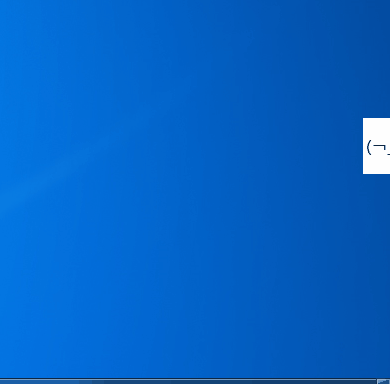

效果图
先上效果图，就是这么简单粗暴。

另外，还有个以悬浮窗为基础，做的表单填写。其中包括了打开文件夹、写数据等小操作。
实现点
- 隐身术（在Windows底部工具栏、在Alt+Tab时、在任务管理器 统统看不到该应用）
- 动画（额，这个是来凑数的）
隐身术
先来看看布局
通常Window是有Title的，并且背景是白色的，我们首先在Xaml里将这些都干掉
<Window x:Class="TDTool.RocketWindow"
xmlns="http://schemas.microsoft.com/winfx/2006/xaml/presentation"
xmlns:x="http://schemas.microsoft.com/winfx/2006/xaml"
Title="RocketWindow" Height="56" Width="56"
WindowStartupLocation="Manual" Topmost="True"
Name="RootWindow"
ShowInTaskbar="False"
WindowStyle="None"
WindowState="Normal"
Loaded="Window_Loaded"
MouseEnter="Window_MouseEnter" MouseLeave="Window_MouseLeave"
Activated="Window_Activated" Deactivated="Window_Deactivated"
MouseLeftButtonDown="Window_MouseLeftButtonDown" MouseLeftButtonUp="Window_MouseLeftButtonUp"
Closed="Window_Closed"
SnapsToDevicePixels="True" ResizeMode="NoResize"
AllowsTransparency="True">
<Grid>
<TextBlock Text="(￢_￢)" FontSize="16"
VerticalAlignment="Center" HorizontalAlignment="Center"/>
</Grid>
</Window>
其中不容易理解的：
- ShowInTaskbar=“False” 不在Windows底部工具栏显示（必要条件）
- WindowStyle=“None” 清空Style
- Topmost=“True” 显示在其他应用的上面（可用可不用）
- WindowState=“Normal” 窗口最大化、最小化和正常
- ResizeMode=“NoResize” 不可调节窗口大小
再来看看代码逻辑
Window的Loaded事件，有如下操作。
private void Window_Loaded(object sender, RoutedEventArgs e)
{
InitNoAltTabShow();
FloatWindow_Location();
}
第一步，Alt+Tab时 不显示该Window。WindowHelper类主要是调用了系统库user32.dll提供的方法，具体啥原理我就不说了，省的误人子弟，感兴趣的大家可以去搜搜，这里我们只要知道怎么用就好。（说句题外话，最近跟user32接触还挺多，有个Windows毛玻璃效果也用到了）
private void InitNoAltTabShow()
{
WindowInteropHelper wndHelper = new WindowInteropHelper(this);
WindowHelper.Window_Loaded(wndHelper);
}
第二步，调整窗口的位置
void FloatWindow_Location()
{
this.Left = SystemParameters.PrimaryScreenWidth - 56; // 56是“小火箭”的宽度
this.Top = SystemParameters.PrimaryScreenHeight - 300;
// 动画，藏在右边
AnimToRightEdgeHidden();
}
动画部分
其实这个很简单，直接上代码吧。
// 通过Window.Left的值的改变，达到移动的目的
private void AnimToRightEdgeHidden()
{
if (IsMouseEnter || RootWindow.Left == Hidden_Location_For_Left)
{
return;
}
DoubleAnimation locationAnim = new DoubleAnimation();
locationAnim.To = Hidden_Location_For_Left; // 终止位置
locationAnim.Duration = TimeSpan.FromMilliseconds(ANIM_TIME); // 动画的时间
// 哪个控件RootWindow，的哪个属性Left值，做什么样的动画效果locationAnim，开始动画BeginAnimation
RootWindow.BeginAnimation(Window.LeftProperty, locationAnim);
}
还有一个不Hidden的动画，篇幅有限，大家自己看源码吧。
进阶
小火箭有个特点，双击Alt的时候，它会进行清理工作。
这点主要是用到：全局快捷键（例如大家都知道QQ的Ctrl+Alt+A是截屏）
网上能搜到，但是我比较喜欢这个功能，所以自己想研究下，再出个小demo
源码
工具推荐
一款666的软件名叫Listary，Windows上集成了一系列好用便捷的操作，优势大家能百度到，也可以到官网去看看。
http://www.listary.com/
还有一点，Made In China
关于顶部插图，出自 一个，如果侵权请邮件我。